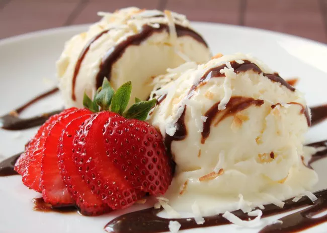

Custard-Style (French) Ice Cream
Ingredients
-
8 egg yolks
-
1 cup granulated sugar, divided
-
1 cup heavy cream
-
3 cups half-and-half
-
Pinch salt
-
1 tablespoon vanilla extract (optional)
Directions
- Step1: In a medium bowl, whisk together the egg yolks and half of the sugar. Set aside.
- Step2: In a medium saucepan, stir together the cream, half-and-half, salt, and remaining
sugar. Heat the mixture over medium-high heat, stirring often, until it comes to a simmer, then
reduce heat to medium.
- Step3: Using a heatproof spatula, stir the cream mixture in the saucepan constantly as you
pour the egg mixture into the pan.
- Step4: Cook, stirring constantly, until thickened and mixture coats the back of the spatula,
1 to 2 minutes longer. Remove from heat.
- Step5: Strain the mixture through a fine-mesh sieve into a clean bowl and whisk in the
vanilla extract. Set the bowl in an ice bath and stir the base occasionally until it's cooled to
room temperature. Remove the bowl from the ice bath, cover with plastic wrap, and refrigerate at
least 2 to 4 hours or overnight before churning, either in an ice cream machine or by hand